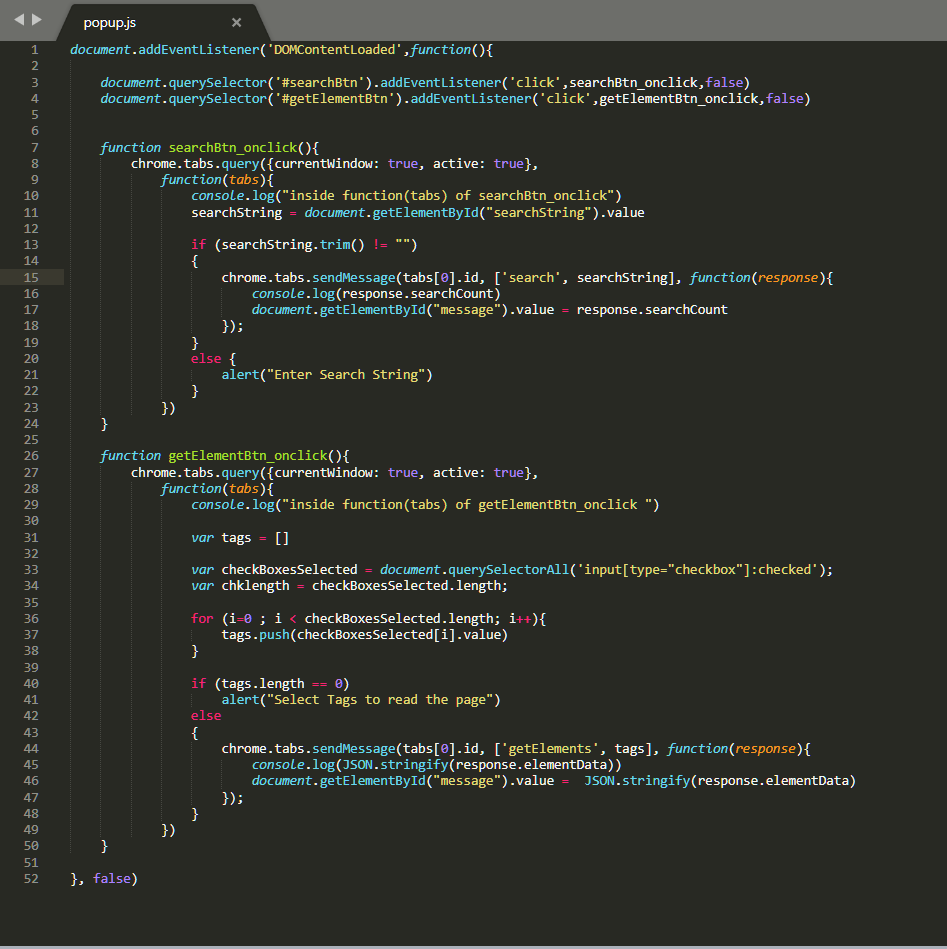

Browser Extension to Captured data from Web Page
-
-
Cover Page
Browser Extension to Capture Web Page Contents

-
1. Introduction
There is a need to capture the data from various sources of document and store into the Repository. The Source can be a PDF file, Microsoft Office Document, XML files or Web Page Contents.
This section contains how Browser Add-ons is developed for capturing the data from the Web Page.
How it works?
The Components of Browser Extension are saved on local drive in a folder. The Browser Extension contains following files,
popup.html
popup.js
contents.js
manifest.json
icon.png
The working of Browser Extension loaded is shown in below image,
-
2. Steps to load Extension into Firefox browser
Following are the steps to load Browser Extension in Mozilla Firefox Browser:
1. Open Firefox Browser
2. Type Url about:debugging as shown in image below
3. Click This Firefox and further click Load Temporary Add-on...
4. Select the Browser Extension Folder and select manifest.json file from the folder and click Open
5. The Extension Manifest file is loaded into Browser as shown below
6. The Browser Extension is loaded into Browser and it is visible in toolbar as shown below,
-
3. Components of Browser Extension
Following are the components of Browser Extension
manifest.json : The manifest.json is the JSON file that has the complete information of Browser Entension Components which is used by the background process to load the Extension in Browser. The manifest.json file is shown in image below,
popup.html : This is the Browser Interface of the Extension in HTML format. When user click the Browser Entension Icon from the browser toolbar, the bakground process loads the popup.html within the active Browser Tab as shown in image below,
popup.js : The action event for the Button present in popup.html are coded in this file. Based on the selection in popup.html the message is passed between popup.js and contents.js. The image of popup.html is shown below,

contents.js : This is contents.js file where actual working of browser extension is coded. The message from popup.js is listened here and according to the request the browser elements are processed. The code in contents.js reads the HTML page using DOM object. The image of contents.js is shown below,
icon.png : This is image file that appears in Browser Tool bar.
-
4. Download and links
1. Page Extracter.7z : Zip file containing all files needed to add and run Browser Extension.
(popup.html, popup.js, content.js, manifest.json, icon.png)
2. Check this link for more information on Browser Extension architecture, Overview Google Chrome